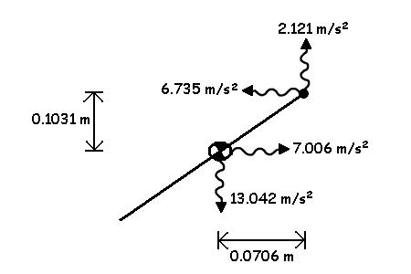
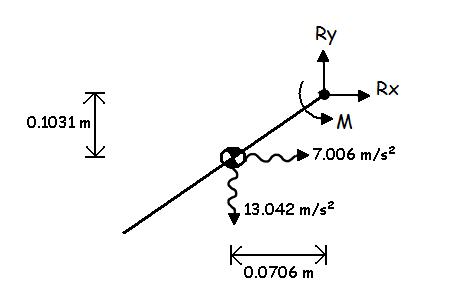
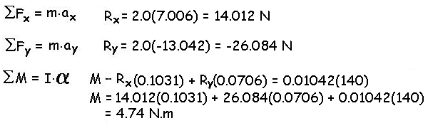
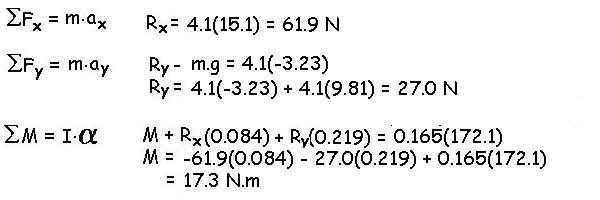

Dynamic Equilibrium
On the preceding page we calculated the sum of the moments about the CofG. We could calculate the moments about any point (P) using the following general solution.
General solution:
We can calculate the sum of the moments about any point (P) using the following formula.
We can see that this formula could be used to calculate the moment about the proximal end rather than the CofG. This would allow us to neglect the reaction forces at the proximal end but would require us to use the acceleration of the proximal end and to calculate the cross product of the radial distance between the proximal end and the CofG (r) with that acceleration. In static equilibrium, the accelerations at the proximal end (and every point) are zero which is why we used the proximal end but in dynamic equilibrium, it is easier to calculate the sum of moments about CofG. When point P is the CofG, r is zero. 
Example: Consider the segment on the right. We would like to calculate the net joint moment acting about the joint by solving for moments about the CofG and the proximal end. We will assume that film analysis provided the necessary coordinates and accelerations via differentiation and that anthropometry tables provided the necessary inertia values and location of the CofG.
The mass of the segment is 2.0 kg and the moments of inertia about the CofG and knee are 0.0104 kg.m2 and 0.04167 kg.m2, respectively. The accelerations of the CofG are ax = 7.006 m/s2, ay = -13.042 m/s2 and the accelerations of the joint are ax = -6.735 m/s2 and ay = 2.121 m/s2. Finally, the angular acceleration is 140 rad/s2.

Solving for
moments about the CofG, we need to find the reaction forces first and
then the net joint moment.

Other Examples:
Consider the kicker on the right. We would like to calculate the joint reaction forces and net joint moment acting on his right knee by solving for moments about the CofG and the proximal end. We will assume that film analysis provided the necessary coordinates and accelerations via differentiation and that anthropometry tables provided the necessary inertia values and location of the CofG. The knee joint coordinate is (1.037, 0.528)m and the location of the CofG of the foot/leg segment is (0.818, 0.612)m. The mass of the segment is 4.1 kg and the moments of inertia about the CofG and knee are 0.165 kg.m2 and 0.391 kg.m2, respectively. The accelerations of the CofG are ax = 15.1 m/s2, ay = -3.23 m/s2 and the accelerations of the knee are ax = 14.9 m/s2 and ay = -51.4 m/s2. Finally, the angular acceleration is 172.1 rad/s2.

The free body diagram is shown to the left. The traditional method of solving for the net joint moment (M) is to solve for moments about the CofG.


Consider the left leg of the kicker which is in contact with the ground. If we try to solve for the joint reaction forces and net joint moment at the left knee, we need to know the ground reaction forces on the foot. Otherwise, we have more than three unknowns to be solved by the three equations of dynamic equilibrium. In these cases, a force platform is used to measure the ground reaction forces which allows the calculation to be made.
Linked segments:
Since the human body is considered to be a series of linked rigid segments, it is useful to be able to determine the forces that join the links because these are the joint forces. To do this, we use Newton's third law that states that each force has an equal and opposite reaction. The easiest way to demonstrate this law is to consider a train that consists of cars that are rigidly connected.
Example: Consider the train engine has a pulling force of that accelerates itself and each railcar at 2.2 m/s2 and we wish to know the force in each couple as well as the force of the engine. Assume that the mass of the engine is 50,000 kg, the mass of the first car is 20,000 kg and the last car is 15,000 kg. Since the cars are rigidly coupled to the engine and each other, they all have the same acceleration.
We can use free body diagrams to determine the forces in each coupling starting with the last car and ending with the engine.

Another way to solve the problem is to total the mass and multiply by the acceleration to get the force of the engine and then use the free body diagrams to calculate the coupling forces. In biomechanics, we don't use that method because the whole body center of gravity accelerations have errors that propagate through the segment free body diagrams and the trunk is not a very rigid segment which also introduces errors. This topic is covered in more detail in the "linked segment kinetics" lecture.